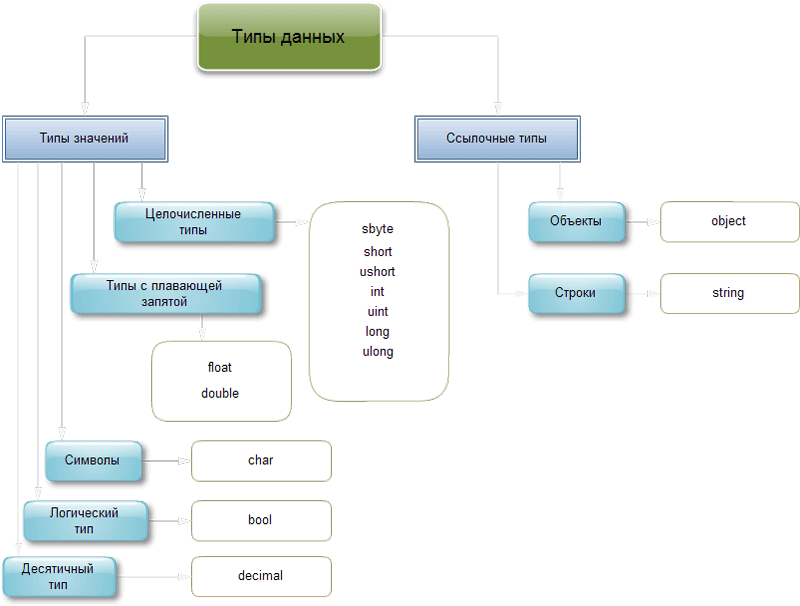
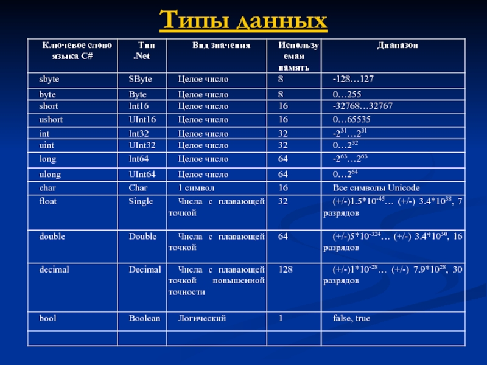

| Тема 7. Типы данных используемые в c#. | ||
| Назад | ||
|
В языке C# существует две разновидности типов данных: значимые типы (value types) и ссылочные типы (reference types). К значимым типам относятся простые типы (char, int, float), перечисляемые типы (enum) и структуры (struct), то есть типы, напрямую содержащие данные. Типы данных имеют особенное значение в C#, поскольку это строго типизированный язык. Это означает, что все операции подвергаются строгому контролю со стороны компилятора на соответствие типов, причем недопустимые операции не компилируются. Следовательно, строгий контроль типов позволяет исключить ошибки и повысить надежность программ. Для обеспечения контроля типов все переменные, выражения и значения должны принадлежать к определенному типу. Такого понятия, как "бестиповая" переменная, в данном языке программирования вообще не существует. Более того, тип значения определяет те операции, которые разрешается выполнять над ним. Операция, разрешенная для одного типа данных, может оказаться недопустимой для другого. В C# имеются две общие категории встроенных типов данных: типы значений и ссылочные типы. Они отличаются по содержимому переменной. Концептуально разница между ними состоит в том, что тип значения (value type) хранит данные непосредственно, в то время как ссылочный тип (reference type) хранит ссылку на значение. Эти типы сохраняются в разных местах памяти: типы значений сохраняются в области, известной как стек, а ссылочные типы — в области, называемой управляемой кучей. 
 Система типовВ языке C# есть следующие базовые типы данных:
bool alive = true; bool isDead = false;
byte bit1 = 1; byte bit2 = 102;
sbyte bit1 = -101; sbyte bit2 = 102;
short n1 = 1; short n2 = 102;
ushort n1 = 1; ushort n2 = 102;
int a = 10; int b = 0b101; // бинарная форма b =5 int c = 0xFF; // шестнадцатеричная форма c = 255
uint a = 10; uint b = 0b101; uint c = 0xFF;
long a = -10; long b = 0b101; long c = 0xFF;
ulong a = 10; ulong b = 0b101; ulong c = 0xFF;
char a = 'A'; char b = '\x5A'; char c = '\u0420';
string hello = "Hello"; string word = "world";
string name = "Tom";
int age = 33;
bool isEmployed = false;
double weight = 78.65;
Console.WriteLine($"Имя: {name}");
Console.WriteLine($"Возраст: {age}");
Console.WriteLine($"Вес: {weight}");
Console.WriteLine($"Работает: {isEmployed}");Например, определим несколько переменных разных типов и выведем их значения на консоль: Для вывода данных на консоль здесь применяется интерполяция: перед строкой ставится знак $ и после этого мы можем вводить в строку в фигурных скобках значения переменных. Консольный вывод программы: Имя: Tom Возраст: 33 Вес: 78,65 Работает: False Использование суффиксов При присвоении значений надо иметь в виду следующую тонкость: все вещественные литералы (дробные числа) рассматриваются как значения типа double. И чтобы указать, что дробное число представляет тип float или тип decimal, необходимо к литералу добавлять суффикс: F/f - для float и M/m - для decimal. float a = 3.14F; float b = 30.6f; decimal c = 1005.8M; decimal d = 334.8m; Подобным образом все целочисленные литералы рассматриваются как значения типа int. Чтобы явным образом указать, что целочисленный литерал представляет значение типа uint, надо использовать суффикс U/u, для типа long - суффикс L/l, а для типа ulong - суффикс UL/ul: uint a = 10U; long b = 20L; ulong c = 30UL; Использование системных типов Выше при перечислении всех базовых типов данных для каждого упоминался системный тип. Потому что название встроенного типа по сути представляет собой сокращенное обозначение системного типа. Например, следующие переменные будут эквивалентны по типу: 2 int a = 4; System.Int32 b = 4; Неявная типизация Ранее мы явным образом указывали тип переменных, например, int x;. И компилятор при запуске уже знал, что x хранит целочисленное значение. Однако мы можем использовать и модель неявной типизации: var hello = "Hell to World"; var c = 20; Для неявной типизации вместо названия типа данных используется ключевое слово var. Затем уже при компиляции компилятор сам выводит тип данных исходя из присвоенного значения. Так как по умолчанию все целочисленные значения рассматриваются как значения типа int, то поэтому в итоге переменная c будет иметь тип int. Аналогично переменной hello присваивается строка, поэтому эта переменная будет иметь тип string Эти переменные подобны обычным, однако они имеют некоторые ограничения. Во-первых, мы не можем сначала объявить неявно типизируемую переменную, а затем инициализировать: // этот код работает int a; a = 20; // этот код не работает var c; c= 20; Во-вторых, мы не можем указать в качестве значения неявно типизируемой переменной null: // этот код не работает var c=null; Так как значение null, то компилятор не сможет вывести тип данных.
|
||
| Конспект подготовлен Бакулиным А. М. 2022 год. | ||